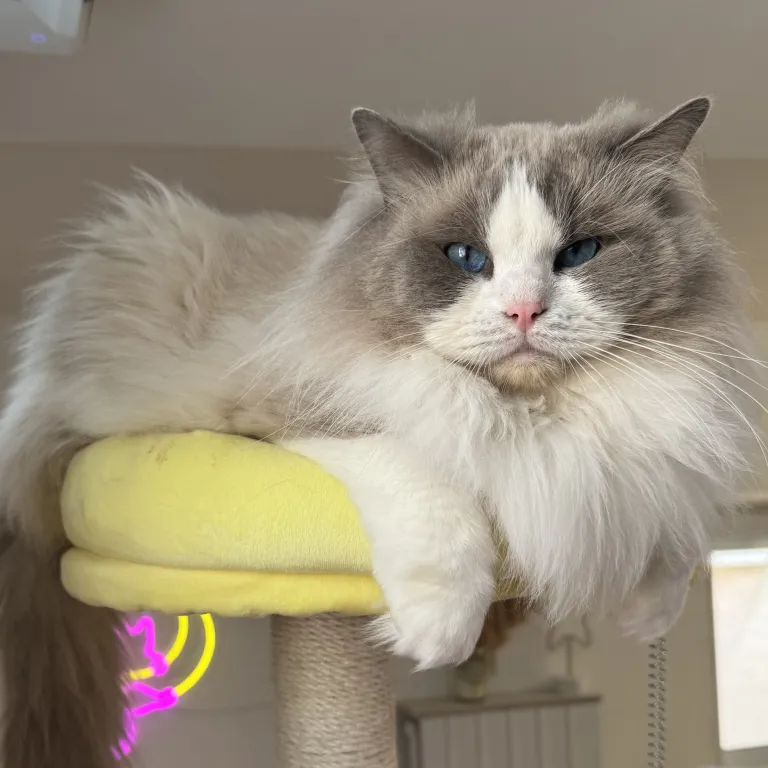

Mâle
Pologne 🇵🇱
Ragissa Nelson
Un reproducteur précieux de la chatterie, sélectionné pour son harmonie, sa robe et la douceur qu’il apporte aux futures portées.
Robe
Bleu bicolore
Rôle
Reproducteur de la chatterie